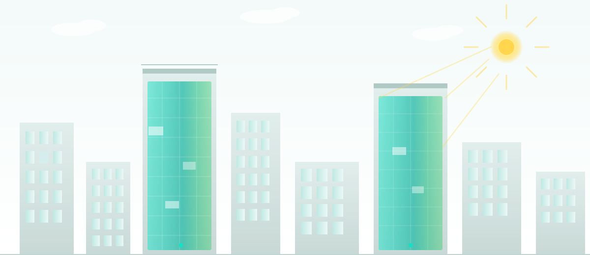

SAF-GLAS es una plataforma de vidrio laminado transparente que Defiende, Protege y Genera. La seguridad balística y climática se une en el mismo paquete transparente que produce electricidad limpia mediante EnergyGlass™, sin rejillas, puntos ni líneas visibles.

SAF-GLAS reúne know-how de vidrio laminado protector, transparencia arquitectónica y una capacidad opcional de generación de energía mediante EnergyGlass. El vidrio deja de ser un elemento pasivo: se convierte en un activo multifunción para edificios, infraestructura crítica, agricultura y diseño especializado.
Aplicaciones balísticas, contra explosiones y entrada forzada. Materiales técnicos que citan estándares NIJ 0108.01 y UL 752, cubriendo categorías de amenaza desde arma corta hasta rifle.
Fuego, huracanes y clima severo. La misma arquitectura de vidrio laminado protege edificios costeros e instalaciones críticas bajo las condiciones ambientales más exigentes.
Electricidad transparente mediante EnergyGlass™: guía la luz hacia celdas fotovoltaicas en el perímetro. Sin rejillas, puntos ni líneas en el campo visual. Solo transparencia.
El sistema guía la luz a través de la estructura transparente hacia celdas fotovoltaicas de perímetro. Un interlayer nano-ingenierizado propaga la luz dentro del vidrio y la convierte en electricidad en los bordes.
Química de interlayer patentada + arquitectura de energía transparente patentada. La patente U.S. 9,553,219 B2 protege el sistema; las nanocápsulas y la formulación exacta permanecen como secreto industrial.
Nanocápsulas de carbono de aproximadamente 60-70 nm tras el procesado, dispersas dentro de un interlayer patentado que redirige parte de la luz hacia el perímetro.
Transmisión luminosa del interlayer principal: 87% (LT87). Rango de diseño espectral visible: 400-800 nm. Claridad óptica sin rejillas, puntos ni líneas en el campo.
U.S. Patent US 9,553,219 B2. La formulación y la concentración permanecen patentadas y como secreto industrial. Estrategia de patentes + secretos industriales + marca registrada.
Sin rejillas, puntos ni líneas visibles en el campo del vidrio, a diferencia del PV opaco convencional.
Múltiples dimensiones, sustratos y combinaciones de acristalamiento para proyectos arquitectónicos, de seguridad y agrícolas.
Concepto de marco de conexión rápida con circuitos estandarizados y ocultos, adaptado a diferentes dimensiones y condiciones de fachada.
Especificaciones técnicas declaradas y resultados de ensayos independientes: caracterización PV, UL Solutions 2025, balística histórica y ensayos agronómicos con terceros.
Transparencia, protección, resiliencia y energía convergen en una sola plataforma.
Muros cortina, ventanas y envolventes arquitectónicos que generan su propia energía sin renunciar a la vista ni a la luz natural.
Vidrio institucional y de infraestructura crítica con capacidad balística, antiexplosión y de entrada forzada.
Construcción contra huracanes y clima severo para zonas costeras y edificios que deben resistir décadas.
Invernaderos y agricultura de ambiente controlado donde el vidrio transmite la luz PAR del cultivo y genera energía con el espectro no productivo.
Cubiertas, domos y superficies de energía transparente para proyectos singulares de arquitectura avanzada.
Protección ingenierizada dentro del vidrio. Energía generada a través del vidrio. SAF-GLAS combina la plataforma protectora con la generación transparente: un solo vidrio, múltiples flujos de valor.